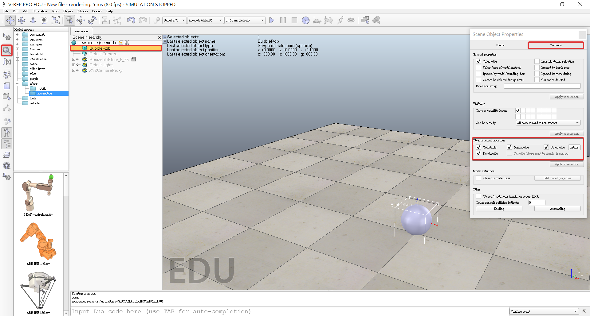
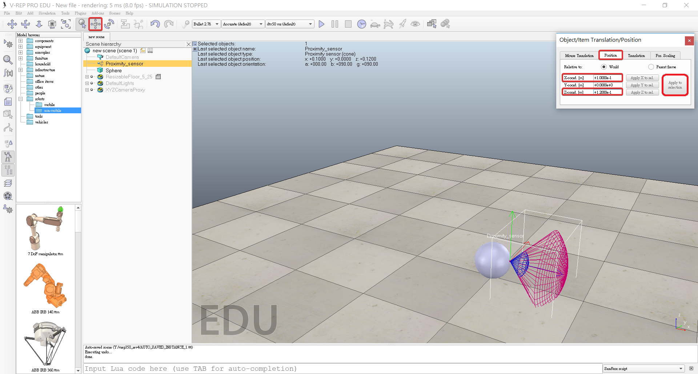
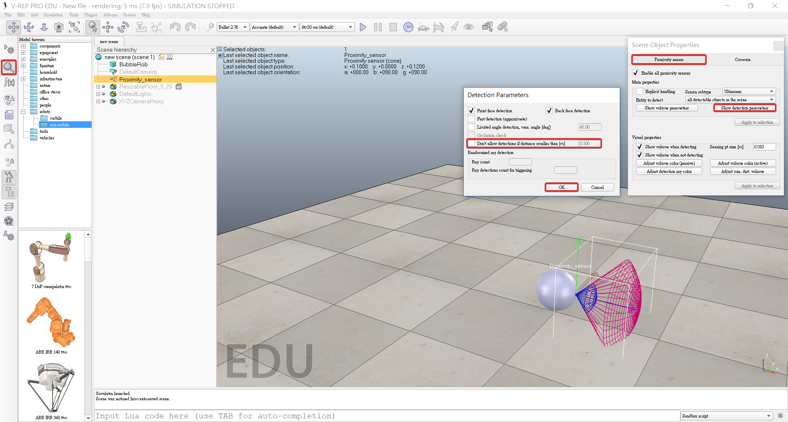
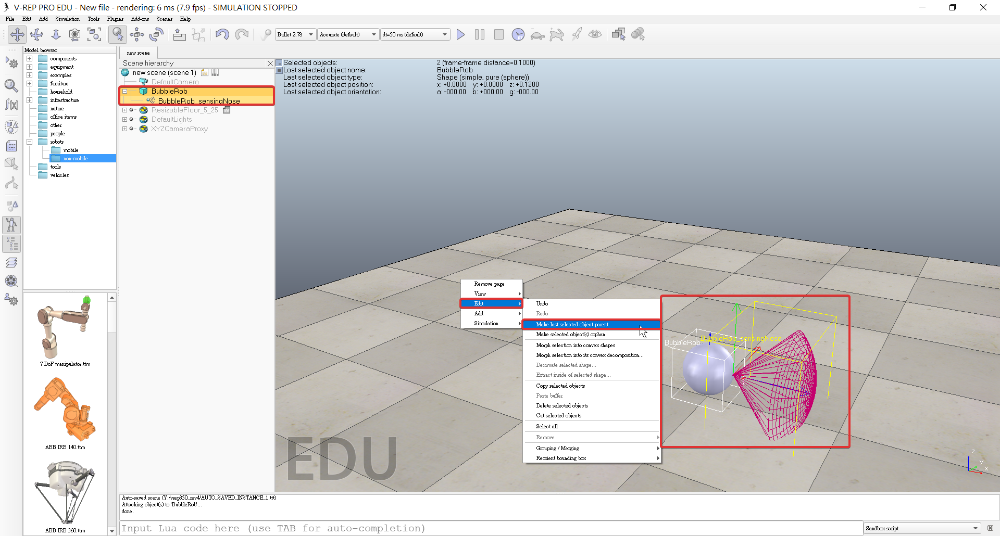
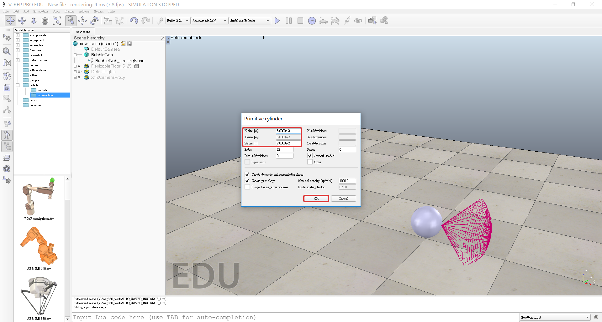
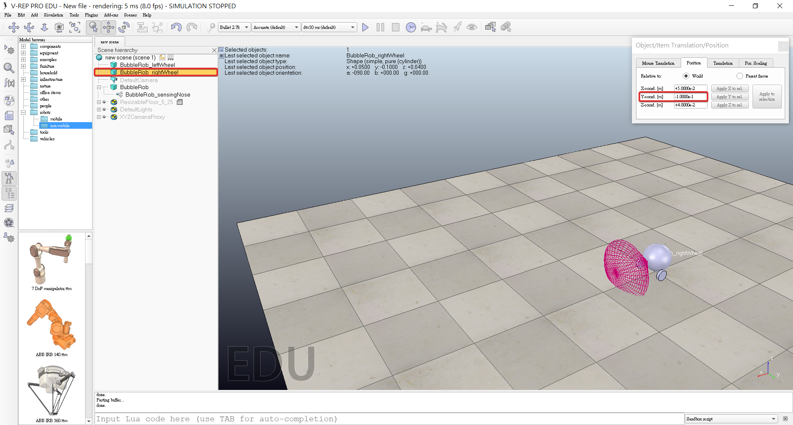
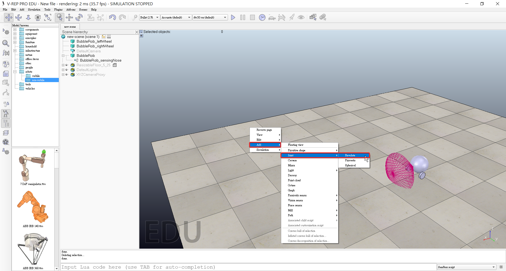
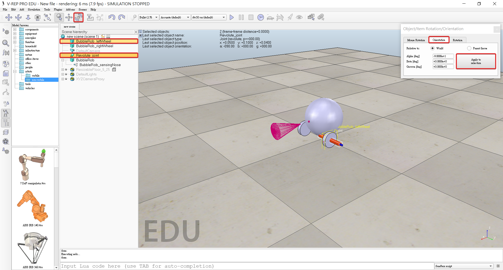
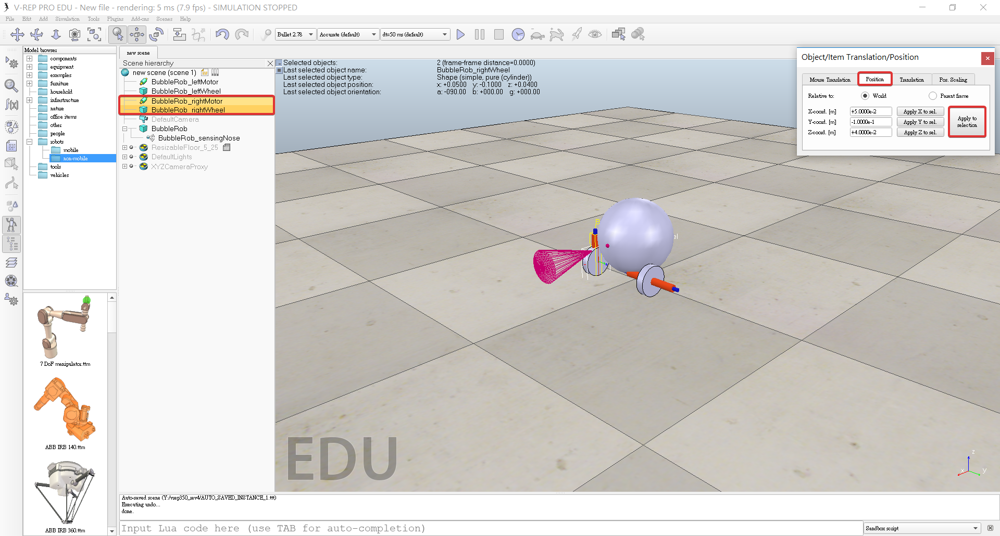

BubbleRob
A. Add a primitive sphere
1. Add a primitive sphere to the scene with [Menu bar --> Add --> Primitive shape --> Sphere]

2. Diameter 0.2, adjust the X-size item to 0.2, then click OK.

3. Enable Collidable, Measurable, Renderable and Detectable in the object common properties for that shape.

4. Click the sphere representing BubbleRob's body.
5. Click translation tab and enter 0.02 for Along Z.
6. Click Translate selection so that all selected objects by 2 cm along the absolute Z-axis.

7. Double-click the sphere's name, edit and enter bubbleRob and press enter.
B. Add a proximity sensor
1. Select [Menu bar --> Add --> Proximity sensor --> Cone type]

2. In the orientation dialog on the orientation tab, we enter 90 for Around Y and for Around Z, then click Rotate selection.

3. In the position dialog, on the position tab, we enter 0.1 for X-coord. and 0.12 for Z-coord.

4. Double-click the proximity sensor's icon in the scene hierarchy to open its properties dialog.
5. Click Show volume parameter to open the proximity sensor volume dialog.
6. Adjust items Offset to 0.005, Angle to 30 and Range to 0.15.

7. Click Show detection parameters in the proximity sensor properties, opens the proximity sensor detection parameter dialog.
8. Uncheck item Don't allow detections if distance smaller than then close that dialog again.

9. Double-click the proximity sensor's name, edit and enter bubbleRob_sensingNose and press enter.
C. Attaches the sensor to the body of the robot
1. Select bubbleRob_sensingNose, then control-select bubbleRob
2. Click [Menu bar --> Edit --> Make last selected object parent]
1. + 2. => Can also drag bubbleRob_sensingNose onto bubbleRob in the scene hierarchy.





E. Add BubbleRob's wheels
1. Add a pure primitive cylinder with [Menu bar --> Add --> Primitive shape --> Cylinder]
2. Dimensions (0.08,0.08,0.02)
3. Enable Collidable, Measurable, Renderable and Detectable in the object common properties for that cylinder.
4. Set the cylinder's absolute position to (0.05,0.1,0.04)







V - rep Tutorials << Previous Next >> Python Manual